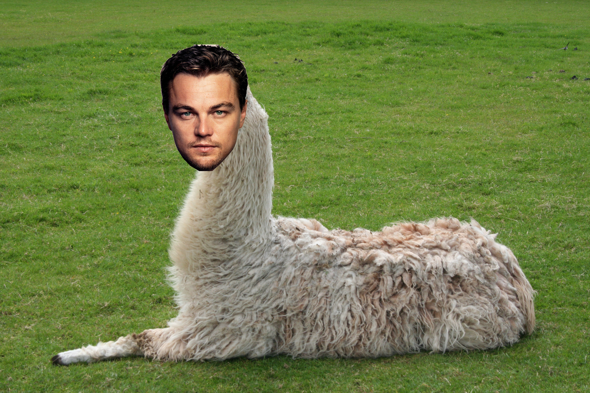
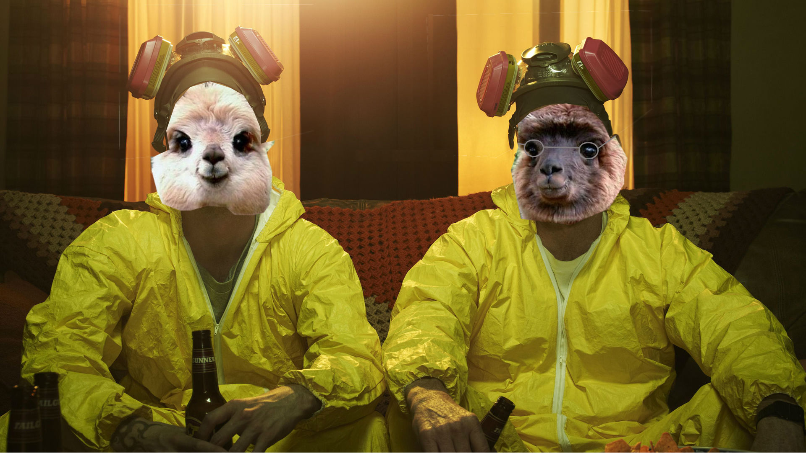

Celebrity news
Llama drama is the center for the scoop on the latest llama related haps
Check out the latest stories.
Llamanardo strutting around at the Oscar's

A freshly washed Llamanardo DiCaprio showed up at the Oscar's in a dapper tie and freshly combed coat. Sources said he looked glossy, classy, and good enough to be sheared for a coat. Looking good Llamanardo!
Breaking Baaaa-d updates

The end of Breaking Baaaa-d is almost near but there is still a lot of cud to chew through. What will happen to Walt? Will Jesse move to Peru? Tune in to the final episodes to find out!
Llamanda Bynes and new boyfriend?

Llamanda Bynes was seen earlier this week with Twilight costar Taylor Llamatner. The two were seen cuddling, cud eating, and hiking among local backpackers.
The scoop on Llama del Rey

Llama del Rey released a new album this week and already has three chart toppers which include "Llama to the Races", "Blue Llama Genes", and "Llama Games" among many others.